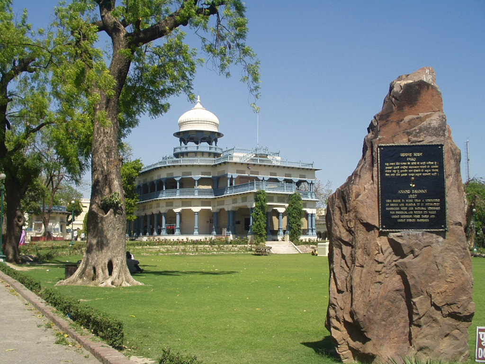

Facade of Anand Bhavan |
Not to be confused with Swaraj Bhavan, the older building which had the same name.
The Anand Bhavan is a historic house museum in Prayagraj, India, focusing on the Nehru family. It was bought by Indian political leader Motilal Nehru in the 1930s to serve as the residence of the Nehru family when the original mansion Swaraj Bhavan (previously called Anand Bhavan) was transformed into the local headquarters of the Indian National Congress. Jawahar Planetarium is situated here, which has been striving to inculcate scientific temper among masses through its sky shows on astronomy and science.
The residence was donated to Indian government in 1970 by the then Prime Minister of India Indira Gandhi, the granddaughter of Motilal Nehru and daughter of Jawaharlal Nehru.